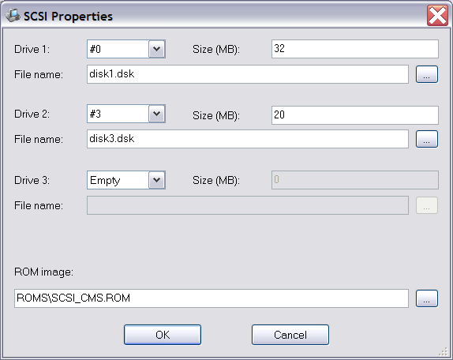
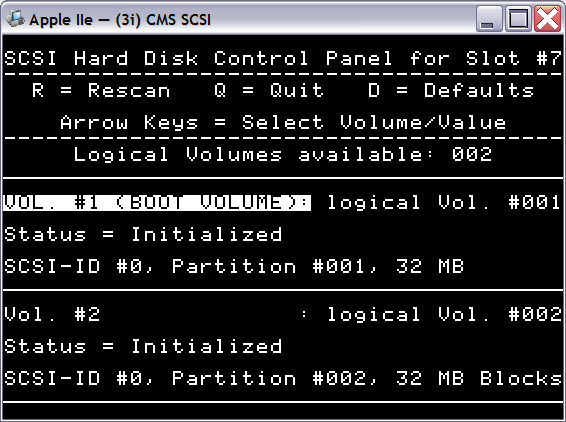

В эмуляторе реализована поддержка контроллера CMS SCSI для Apple-совместимых систем.
Эмулятор поддерживает подключение до трёх виртуальных дисков различного размера.
Настройка конфигурации дисков производится в интерфейсе контроллера:

Для каждого из устройств необходимо указать идентификатор на шине (идентификаторы должны быть уникальными), размер диска в мегабайтах и имя файла образа диска.
Поскольку ProDOS не поддерживает устройства размером более 32Мбайт и не поддерживает более 2-х устройств на одном слоте, контроллер CMS автоматически разбивает большие диски на логические тома по 32Мбайта и позволяет указать, какие два из имеющихся логических томов должны быть доступны для использования в системе. Для вызова меню выбора томов необходимо при начале загрузки системы быстро нажать и удерживать левую клавишу Alt (для систем Apple //e) или левую кнопку мыши/джойстика. Из-за использования в меню строчных букв, в Apple ][ оно будет отображаться некорректно.

Чтобы загрузка системы автоматически производилась с жёсткого диска, достаточно установить плату контроллера SCSI в более старший слот по сравнению с контроллером дисковода (для стандартной конфигурации Apple это слот 7).
Для создания нового образа диска достаточно выполнить следующие действия:
См. также: Изменение конфигурации, Описание и настройка устройств, Поддерживаемое оборудование, Главное меню